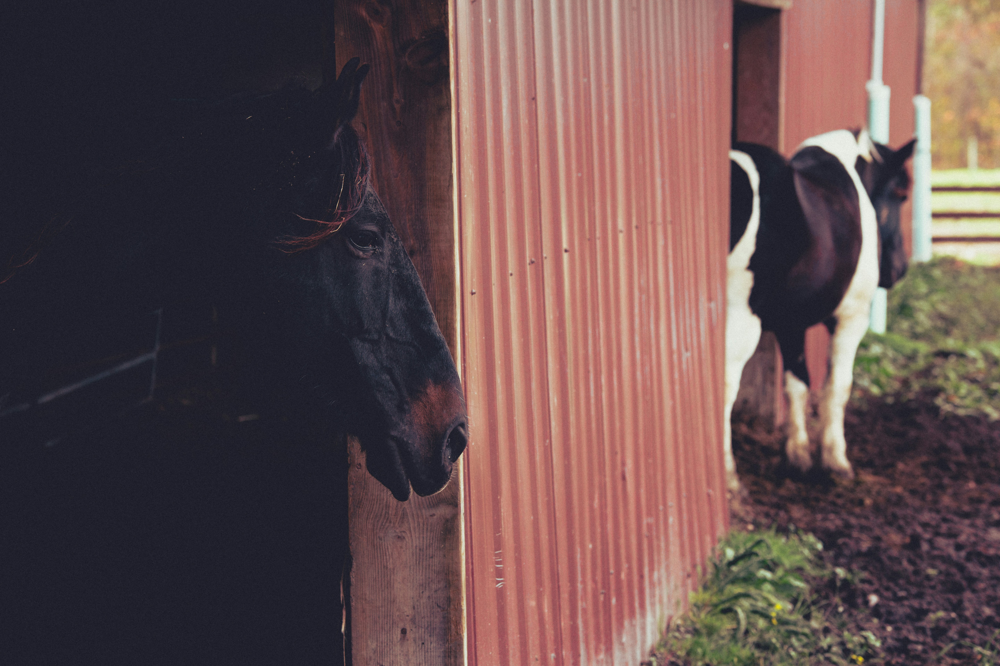

<!DOCTYPE html>
<html lang="zh-Hant-TW">

<head>
    <meta charset="UTF-8">
    <meta name="viewport" content="width=device-width, initial-scale=1.0">
    <title>Document</title>
    <!-- 燈箱效果 -->
    <!-- <link rel="stylesheet" href="./jQuery/lightbox/css/lightbox.css"> -->

    <!-- 步驟一：載入React, Babel -->
    <script crossorigin src="https://unpkg.com/react@18/umd/react.development.js"></script>
    <script crossorigin src="https://unpkg.com/react-dom@18/umd/react-dom.development.js"></script>
    <script src="https://unpkg.com/@babel/standalone/babel.min.js"></script>

    <style>
        #useMasinry {
            /* 因應左右留白平均分配 */
            margin: auto;
        }

        .box {
            width: 300px;
            margin-bottom: 5px;
        }

        .box img {
            width: 300px;
            height: 300px;
            vertical-align: bottom;
            /* 取消圖片下方預設的留白*/
        }
    </style>
</head>

<body>
    <div id="root"></div>
    <script type="text/babel">

        const { useEffect } = React;
        // const App = () => {
        function App() {
            useEffect(() => {
                $(function () {
                    $('#useMasinry').imagesLoaded(function () {
                        $('#useMasinry').masonry({
                            isFitWidth: true,
                            //若要產生左右留白平均(水平置中)，必須搭配最外框的 #useMasinry 要margin:auto
                        });
                    });
                })
            }, []);

            return (
                <div>
                    <h2>瀑布流</h2>
                    <div id="useMasinry">
                        <div class="box">
                            
                        </div>
                        <div class="box">
                            
                        </div>
                        <div class="box">
                            
                        </div>
                        <div class="box">
                            
                        </div>
                        <div class="box">
                            
                        </div>
                        <div class="box">
                            
                        </div>
                    </div>
                </div>
            )
        }
        ReactDOM
            .createRoot(document.querySelector('#root'))
            .render(<App />)

    </script>

    <!-- JQuety主程式 -->
    <script src="./jQuery/js/jquery-1.11.3.min.js"></script>
    <!-- 載入圖片主程式 -->
    <script src="./jQuery/js/imagesloaded.pkgd.min.js"></script>
    <!-- 瀑布流主程式 -->
    <script src="./jQuery/js/masonry.pkgd.min.js"></script>

</body>

</html>